건설재료시험기사 (2013-06-02 기출문제)
1과목: 콘크리트공학
1. 다음의 콘크리트 워커빌리티 측정 시험방법 중 틀린 것은?
- 슬럼프 시험
- 리몰딩 시험
- 구관입 시험
- 블리딩 시험
(정답률: 71%)

2. 콘크리트 구조물의 건조수축, 온도 변화 등에 의해 발생되는 균열을 한 곳으로 집중시키기 위해 단면 결손부에 설치하는 것은?
- 신축이음
- 균열유발줄눈
- 콜드 조인트(cold joint)
- 연직시공이음
(정답률: 82%)
3. 콘크리트의 크리프에 대한 설명으로 옳지 않은 것은?
- 온도가 높을수록 크리프는 증가한다.
- 부재치수가 작을수록 크리프는 증가한다.
- 시멘트량이 많을수록 크리프는 감소한다.
- 중용열 시멘트나 혼합 시멘트는 보통 시멘트보다 크리프가 크다.
(정답률: 75%)
4. 포장용 시멘트 콘크리트의 배합 기준중 옳지 않은 것은?
- 설계기준 휨강도 : 4.5MPa 이상
- 슬럼프 : 20mm 이하
- 공기량 : 4~6%
- 단위수량 : 150kg/m3 이하
(정답률: 55%)
5. 내부 진동기를 사용하여 콘크리트를 다질 경우에 옳지 않은 것은?
- 내부 진동기는 하층의 콘크리트 속에 0.1m 정도 찔러 다진다.
- 연직방향으로 내부 진동기 삽입간격은 0.5m 이하로 한다.
- 콘크리트를 횡방향으로 이동시킬 목적으로 사용해서는 안 된다.
- 콘크리트를 타설한 직후에 거푸집 외부에 충격을 줘서는 안 된다.
(정답률: 76%)
6. 콘크리트 연직시공이음에 대한 설명 중 틀린 것은?
- 시공이음면의 거푸집을 견고하게 지지하고 이음부위는 진동기로 충분히 다진다.
- 새 콘크리트를 타설한 후에 적당한 시기에 재진동 다지기를 하는 것이 좋다.
- 보통 콘크리트 타설 후 여름에는 10~15시간 정도에 시공이음면의 거푸집을 제거한다.
- 구 콘크리트 시공이음면을 쇠솔이나 쪼아내기를 하여 거칠게 하고 충분히 흡수시킨 후 시멘트 풀, 모르타르, 습윤면용에폭시 수지 등을 바르고 새 콘크리트를 타설한다.
(정답률: 74%)
7. 섬유보강 콘크리트의 배합에 대한 설명 중 틀린 것은?
- 강섬유의 혼입량은 콘크리트 용적의 0.5~2% 정도이다.
- 압축강도, 인장강도, 휨강도는 섬유 혼입률에 거의 비례하여 증대하나 전단강도 및 인성은 그다지 변화하지 않는다.
- 단위수량 증가는 섬유 혼입률 1%에 대하여 약 20kg/m3정도이다.
- 강제식 믹서로 비비며 일반 콘크리트에 비해 2~4배 정도 비비기 부하가 커진다.
(정답률: 62%)
8. 고유동 콘크리트에서 굳지 않은 콘크리트의 유동성을 관리하는 시험으로 옳은 것은?
- 슬럼프 플로 시험
- 간극 통과성 시험
- 깔때기 유하시간
- 자기 충전 시험
(정답률: 83%)
9. 일반 콘크리트의 제조 시 굵은골재 목표 1회 계량분은 2,530kg이나 현장에서 굵은골재 저울에 의한 계량치는 2,500kg이다. 계량오차와 허용치 만족 여부에 대해 옳은 것은?
- 계량오차 : -1%, 허용치 만족 여부 : 합격
- 계량오차 : -2%, 허용치 만족 여부 : 합격
- 계량오차 : -1%, 허용치 만족 여부 : 불합격
- 계량오차 : -2%, 허용치 만족 여부 : 불합격
(정답률: 36%)
10. 고강도 콘크리트의 타설에 대한 내용 중( )에 적합한 것은?
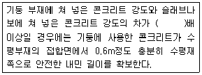
- 0.6
- 1.0
- 1.4
- 1.6
(정답률: 60%)
11. 콘크리트의 품질관리 중 받아들이기 품질검사에 대한 설명으로 틀린 것은?
- 콘크리트의 받아들이기 품질관리는 콘크리트를 타설하기 전에 실시한다.
- 강도 검사는 콘크리트의 배합검사를 실시하는 것을 표준으로 한다.
- 내구성 검사는 공기량, 염소이온량을 측정하는 것으로 한다.
- 워커빌리티 검사는 잔골재율의 설정치를 만족하는지의 여부를 확인하고 재료분리 저항성을 실험에 의하여 확인한다.
(정답률: 40%)
12. 콘크리트의 압축강도 시험용 공시체 제작 방법 중 옳지 않은 것은?
- 몰드를 떼어내는 시기는 콘크리트 채우기가 끝나고 16시간 이상 3일 이내로 한다.
- 공시체는 지름의 2배 높이를 가진 원기둥으로 한다.
- 공시체의 지름은 굵은골재 최대치수의 3배 이상, 150mm 이상으로 한다.
- 콘크리트를 몰드에 채울 때 2층 이상의 거의 같은 층으로 나눠서 채운다.
(정답률: 67%)
13. 150×150×530mm의 공시체가 3등분 중앙부에서 파괴되고 재하하중이 45kN일 때 휨강도는?(단, 지간은 450mm이다.)
- 4.2MPa
- 4.8MPa
- 5.3MPa
- 6.0MPa
(정답률: 56%)
14. 콘크리트 압축강도의 표준편차를 알지 못할경우로 콘크리트의 설계기준 압축강도가 30MPa일 때 배합강도는?
- 37MPa
- 38.5MPa
- 40MPa
- 42MPa
(정답률: 74%)
15. 한중 콘크리트에서 비볐을 때 콘크리트 온도가 30℃, 비빈 후부터 타설이 끝났을 때까지의 시간이 90분, 타설 시 주위의 온도가 4℃일 경우에 콘크리트의 온도는?
- 18℃
- 24.2℃
- 20.5℃
- 23℃
(정답률: 57%)
16. 콘크리트의 배합강도 결정 시 압축강도 시험 횟수에 따른 표준편차가 필요한데 이때 시험횟수와 보정계수로 옳지 않은 것은?
- 15회 : 1.16
- 20회 : 1.07
- 25회 : 1.03
- 30회 : 1.0
(정답률: 65%)
17. 거푸집의 높이가 높아 슈트, 펌프 배관, 버킷, 호퍼 등으로 콘크리트를 타설 시 배출구와 타설면까지의 높이는 몇 m 이하로 하는가?
- 1m
- 1.5m
- 2.0m
- 2.5m
(정답률: 84%)
18. 콘크리트 비파괴 시험방법으로 콘크리트 내부의 공동이나 균열 및 강도 추정 등에 이용되는 것은?
- 초음파법
- 인발법
- 전기방식법
- 반발경도법
(정답률: 73%)
19. 다음의 경량골재 콘크리트에 대한 설명 중 틀린 것은?
- 보통골재 콘크리트보다 슬럼프가 작아지는 경향이 있다.
- 배합 시 경량골재는 젖은 상태로 사용한다.
- 경량골재 콘크리트의 선팽창률은 보통 콘크리트의 60~70% 정도이다.
- 보통 골재 콘크리트의 경우보다 공기량을 1% 정도 작게 한다.
(정답률: 52%)
20. 다음 조건과 같은 콘크리트 시방배합일 때 공기량은 얼마인가?
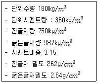
- 4.0%
- 4.2%
- 4.4%
- 4.6%
(정답률: 30%)
2과목: 건설시공 및 관리
21. 저소음, 저진동으로 시가지 공사에 적합한 구조물 기초공법으로 굴착 구멍의 붕괴를 막기 위해 벤토나이트 용액을 이용하여 벽체를 연속적으로 시공하는 공법은?
- JSP 공법
- Slurry Wall 공법
- Open cut 공법
- SGR 공법
(정답률: 72%)
22. Network 공정표에서 주공정선에 대한 설명 중 틀린 것은?
- 공정 단축은 주공정선에서 한다.
- 주공정선상에서 총 여유시간(TF)은 0이다.
- 주공정선은 반드시 1개가 존재하게 된다.
- 주공정선은 작업경로 중에서 가장 긴 경로이다.
(정답률: 57%)
23. 다음 그림과 같은 측량성과의 횡단면적을 심프슨(Simpson)제 2법칙에 의해 구한 값은? (단, 단위는 m이다.)
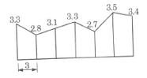
- 35.8m2
- 45.8m2
- 55.8m2
- 65.8m2
(정답률: 55%)
24. 10m3덤프 트럭으로 1,200m3의 운반토량을 토사장에 운반할 때 1일 소요 대수는? (단, 트럭의 운반속도 15km/hr, 상하차시간 8분, 1일 작업시간 8시간, 토사장까지의 거리 3km)
- 8대
- 9대
- 10대
- 11대
(정답률: 30%)
25. 암거의 매설깊이가 1.8m이고 암거 상부 지하수면 최저 위치와의 거리 30cm, 지하수면의 경사 6˚인 암거가 지하수면의 깊이를 1m로 할 때 암거 간 매설 간격은?
- 4.7m
- 9.5m
- 8.7m
- 10.7m
(정답률: 50%)
26. 공사일수를 3점 견적법에 의해 산정할 때 적정한 공사 일수는?(단 낙관일수 5일, 정상 일수 7일, 비관일수 9일)
- 5일
- 6일
- 7일
- 8일
(정답률: 71%)
27. 다음의 아스팔트 포장 단면도를 보고 옳게 표현된 것은? (순서대로 ㉠,㉡,㉢,㉣,㉤)
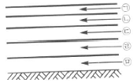
- 표층, 기층, 중간층, 차단층, 보조기층
- 표층, 중간층, 기층, 보조기층, 차단층
- 표층, 차단층, 중간층, 기층, 보조기층
- 표층, 차단층, 기층, 보조기층, 차단층
(정답률: 61%)
28. 터널의 계측관리 중 일상계측 항목에 속하지 않는 것은?
- 천단침하 측정
- 갱내 관찰조사
- 지중변위 측정
- 내공변위 측정
(정답률: 46%)
29. 아스팔트 포장면이 거북등 모양의 균열이 발생하는 원인으로 가장 타당한 것은?
- 노반 지지력이 부족한 경우
- 포장 시 전압이 부족한 경우
- 아스팔트 혼합물을 지나치게 가열한 경우
- 골재와 아스팔트의 결합력이 부족한 경우
(정답률: 61%)
30. 교량의 가설 위치 선정으로 옳지 않은 것은?
- 교각의 축방향이 유수의 방향과 직각이 되는 곳
- 하천의 굴곡부는 가능한 피할 것
- 하천과 양안의 지질이 양호한 곳
- 하천과 유수가 안정된 곳
(정답률: 72%)
31. 아스팔트 포장의 끝손질 마무리 다짐에 적합한 장비는?
- 머캐덤 롤러
- 타이어 롤러
- 탠덤 롤러
- 탬핑 롤러
(정답률: 50%)
32. 사질토 지반의 지하수위를 저하시키기 위한 공법으로 집수관 및 양수관, 연결관 등의 설치가 필요한 것은?
- 웰 포인트 공법
- 페이퍼 드레인 공법
- 샌드 드레인 공법
- 약액 주입공법
(정답률: 65%)
33. 암석 발파에 대한 설명 중 틀린 것은?
- 시험발파로 발파계수(C)를 알 수 있다.
- 누두지수(n)가 1보다 크면 약장약이다.
- 누두지수n=R/W이다.
- 누수지수(n)가 1이면 표준장약이다.
(정답률: 70%)
34. 교량의 가설공법 중 비계를 사용하는 공법이 아닌 것은?
- 새들 공법
- 벤트식 공법
- 이랙션 트러스 공법
- 캔틸레버식 공법
(정답률: 39%)
35. 공기 케이슨 공법에 대한 설명으로 옳지 않은 것은?
- 장애물 제거가 용이하고 인접지반의 침하 우려가 없다.
- 토층의 토질을 확인할 수 있으며 정확한 측정이 가능하다.
- 일반적으로 굴착깊이는 35~40m로 제한된다.
- 소규모 공사나 심도가 얕은 시공에서 경제적이다.
(정답률: 70%)
36. 보강토 옹벽에 관한 설명 중 틀린 것은?
- 흙과 인장력이 큰 보강재를 부설하여 마찰력에 의해 토압을 지지한다.
- 특수한 시공장비가 필요하지 않아 시공이 용이하고 공기 단축을 할 수 있다.
- 기초 지반이 견고하지 않은 곳은 적용이 곤란하다.
- 높은 옹벽의 축조가 가능하다.
(정답률: 49%)
37. 히빙(heaving)의 방지 대책으로 옳지 않은 것은?
- 굴착 시 부분굴착보다 전면굴착을 한다.
- 굴착 저면의 지반을 개량한다.
- 흙막이 근입깊이를 깊게 한다.
- 지하수의 배수 처리를 한다.
(정답률: 64%)
38. 52,500m3의 성토를 하는데 유용토로 느슨한 토량이 35,000m3가 있다. 이때 부족한 토량은 본바닥 토량으로 얼마인가?(단, L=1.2, C=0.9 )
- 25.321m3
- 27.530m3
- 29,166m3
- 30,⑤0m3
(정답률: 50%)
39. 여수로의 종류 중 댐 정상부를 월류시킬 수 없을 때 댐의 한쪽 또는 양쪽에 설치하며 월류부는 난류를 막기 위해 굳은 암반상에 일직선으로 설치하는 것은?
- 그롤리홀 여수로
- 슈트식 여수로
- 사이펀 여수로
- 측수로 여수로
(정답률: 67%)
40. 다음의 조건에서 본바닥 토량으로 환산한 1시간당 불도저의 토공 작업량은?
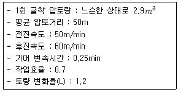
- 30m3/hr
- 40m3/hr
- 49m3/hr
- 45m3/hr
(정답률: 53%)
3과목: 건설재료 및 시험
41. 수화열에 의한 균열의 문제가 없는 경우로 한중 콘크리트에 적합한 시멘트는?
- 조강 포틀랜드 시멘트
- 보통 포틀랜드 시멘트
- 중용열 포틀랜드 시멘트
- 실리카 시멘트
(정답률: 62%)
42. 화성암에 속하지 않는 석재는?
- 현무암
- 안산암
- 섬록암
- 편마암
(정답률: 59%)
43. 다음 표는 혼화재의 종류별 특성을 표시한 값이다. 적합한 혼화재의 명칭은? (순서대로 A, B, C)
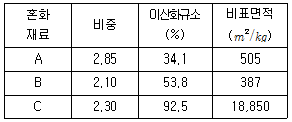
- 실리카 퓸, 고로슬래그, 플라이애시
- 고로슬래그, 플라이애시, 실리카 퓸
- 실리카 퓸, 플라이애시, 고로슬래그
- 고로슬래그, 실리카 퓸, 플라이애시
(정답률: 56%)
44. 콘크리트에 사용되는 골재의 알칼리 골재 반응에 관한 설명으로 옳지 않은 것은?
- 시멘트 중 Na2O량 및 K2O량의 함유량과 반응성 골재에 따라 팽창성 균열이 달라 진다.
- 알칼리 골재 반응을 억제하기 위해 알칼리량을 0.8%이하로 한다.
- 알칼리 골재 반응을 일으키기 쉬운 골재는 오팔, 트리디마이트, 크리스토발라이트 등을 포함한 골재이다.
- 알칼리 골재를 억제하기 위해 플라이애시 시멘트나 고로 슬래그 시멘트를 사용한다.
(정답률: 45%)
45. 시멘트에 대한 설명으로 옳지 않은 것은?
- 분말도가 크면 수화열이 빨리 진행되어 초기강도가 크다.
- 시멘트의 강도는 시멘트 풀의 강도로 나타낸다.
- 풍화된 시멘트는 비중이 감소되고 강열감량이 증가된다.
- 시멘트의 팽창 정도를 알기 위해 시멘트의 안정성 시험을 한다.
(정답률: 40%)
46. A골재의 조립률 6.2, B골재의 조립률 7.5인 두 종류의 골재 중량비율을 7:3으로 혼합할 때 조립률은?
- 6.24
- 6.59
- 6.85
- 7.11
(정답률: 62%)
47. 아스팔트 혼합물의 특성에 대한 설명 중 틀린 것은?
- 아스팔트 침입도가 클수록 안정도가 감소한다.
- 골재의 최대 입경이 작을수록 안정도가 증가한다.
- 공극률이 작은 골재일수록 안정도가 증가한다.
- 채움재량이 적을수록 안정도가 감소한다.
(정답률: 41%)
48. 콘크리트에 사용되는 골재의 품질시험에 관한 설명 중 틀린 것은?
- 잔골재의 조립률은 2.3~3.1이 적당하다.
- 콘크리트용 굵은골재의 내구성을 판단하기 위해 황산나트륨에 의한 안정성 시험을 한다.
- 조립률에 의한 골재의 입도를 알 수 있다.
- 유기 불순물 시험의 결과 시험용액의 색도가 표준색 용액보다 연하면 콘크리트 용으로 사용할 수 없다.
(정답률: 38%)
49. 역청 혼합물의 배합설계에 대한 설명 중 틀린 것은?
- 흐름값은 최대 외력을 다져진 혼합물에 가했을 때 소성변형의 값이다.
- 마샬 안정도는 소성변형에 대한 저항값이다.
- 최대이론밀도는 다져진 혼합물의 공극을 제외한 밀도이다.
- 포화도는 다져진 혼합물의 골재 공극 중 역청재가 차지하는 질량 비율(%)로 나타낸다.
(정답률: 26%)
50. 고무화 아스팔트가 스트레이트 아스팔트와 비교했을 때 장점으로 틀린 것은?
- 응집성이 크다.
- 내후성이 크다.
- 감온성이 크다.
- 부착력이 크다.
(정답률: 68%)
51. 비결정질의 유리질 재료로 잠재수경성을 가지고 있으며 유리화율이 높을수록 잠재수경성 반응이 커지는 혼화재료는?
- 플라이애시
- 팽창재
- 실리카 퓸
- 고로 슬래그 미분말
(정답률: 48%)
52. 길이가 50cm, 지름이 6cm인 강봉을 축방향으로 인장시켰을 때 길이가 8mm늘고 지름이 2mm 줄었다. 이 강봉의 푸아송의 비는?
- 0.48
- 0.96
- 1.04
- 2.08
(정답률: 49%)
53. 끌을 이용하여 각목을 얇게 절단한 것으로 아름다운 결을 장식용으로 이용하기 좋은 합판은?
- 슬라이스 베니어
- 로터리 베니어
- 집성목판
- 소드 베니어
(정답률: 61%)
54. 석재에 대한 설명 중 틀린 것은?
- 석재는 구조용으로 사용할 경우 주로 인장력을 받는 부분에 사용된다.
- 석재는 취급에 불편하지 않게 1m3정도의 크기로 사용하는 것이 좋다.
- 암석의 압축강도가 50MPa이상인 경우에는 경석이라 한다.
- 퇴적암이나 변성암에나타나는 평행의 절리를 층리라 한다.
(정답률: 60%)
55. 골재의 실적률 시험 결과 표건밀도 2,650kg/L, 단위용적질량 1,550kg/L, 흡수 율 1.6%이다. 이 골재의 공극률은?
- 40.6%
- 41.6%
- 58.5%
- 59.4%
(정답률: 35%)
56. 구리, 크롬, 니켈 등의 합금원소를 소량 함유한 강재로 일반강과 비교할 떄 4~8배 이상의 내식성을 가지며 자연발생적인 색상의 미려함도 큰 장점인 강재는?
- 무도장 내후성강
- 내층상 박리강
- TMCP강
- 일반 구조용 압연 강재
(정답률: 52%)
57. 콘크리트용 혼화재료 중 응결지연제에 대한 설명으로 틀린 것은?
- 시멘트의 응결, 경화를 길게 한다.
- 서중 콘크리트에 이용된다.
- 조기강도를 증대시켜 주는 효과가 있다.
- 연속 타설 시 작업이음 발생을 방지한다.
(정답률: 67%)
58. 폭약에 대한 설명으로 틀린 것은?
- 다이너마이트보다 칼릿은 발화점이 높다.
- 다이너마이트의 주성분은 니트로글리세린이다.
- ANFO폭약은 폭발가스량이 적고 폭발온도는 비교적 높다.
- 니트로글리세린은 글리세린에 질산과 황산을 혼합하여 반응시켜 만든다.
(정답률: 47%)
59. 폴리머를 판상으로 압축시키며 격자 모양의 그리드 형태로 구멍을 내 일축 또는 이축으로 연신하여 제조하므로 분자 배열이 잘 조정되어 높은 강도를 내어 보강 및 분리 기능의 용도로 사용되는 토목섬유는?
- 직포형 지오텍스타일
- 부직포형 지오텍스타일
- 지오멤브레인
- 지오그리드
(정답률: 66%)
60. 시멘트의 관리에 대한 설명으로 옳지 않은 것은?
- 포대 시멘트는 13포 이상 쌓아 저장해서는 안된다.
- 보통 60℃이하 온도의 시멘트를 사용하면 콘크리트 품질에 영향이 없다.
- 시멘트는 방습적인 구조에서 저장한다.
- 저장 중에 약간이라도 굳은 시멘트는 사용해서는 안 된다.
(정답률: 65%)
4과목: 토질 및 기초
61. 포화된 점토시료에 대해 비압밀 비배수 삼축압축시험을 실시하여 얻어진 비배수 전단강도는 180kg/cm2이었고 이 시험에서 가한 구속응력은 240kg/cm2이었다. 만약 동일한 점토시료에 대해 또 한 번의 비압밀 비배수 삼축압축시험을 실시할 경우 전단 파괴 시에 예상되는 축차응력의 크기는? (단, 이번 시험에서 가해질 구속응력의 크기 는 400kg/cm2)
- 90kg/cm2
- 180kg/cm2
- 360kg/cm2
- 540kg/cm2
(정답률: 36%)
62. 다음 그림과 같이 피압수압을 받고 있는 2m 두께의 모래층이 있다. 그 위의 포화된 점토층을 5m 깊이로 굴착하는 경우 분사현상이 발생하지 않기 위한 수심(h)는 최소 얼마를 초과하도록 하여야 하는가?
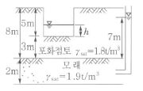
- 1.3m
- 1.6m
- 1.9m
- 2.4m
(정답률: 44%)
63. 표준관입시험(S.P.T)결과 N치가 30였고, 그 때 채취한 교란시료로 입도시험을 한 결과 입자가 둥글고, 입도분포가 불량할 때 Dunham공식에 의해서 구한 내부 마찰각은?
- 33.97˚
- 37.3˚
- 42.3˚
- 48.3˚
(정답률: 43%)
64. 다음 그림에서 C점의 압력수두 및 전수두 값은 얼마인가?
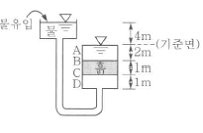
- 압력수두 3m, 전수두 2m
- 압력수두 7m, 전수두 0m
- 압력수두 3m, 전수두 3m
- 압력수두 7m, 전수두 4m
(정답률: 46%)
65. 다져진 흙의 역학적 특성에 대한 설명으로 틀린 것은?
- 다짐에 의하여 간극이 작아지고 부착력이 커져서 역학적 강도 및 지지력은 증대하고 압축성, 흡수성 및 투수성은 감소한다.
- 점토를 최적함수비보다 약간 건조측의 함수비로 다지면 면모구조를 가지게 된다.
- 점토를 최적함수비보다 약간 습윤측에서 다지면 투수계수가 감소하게 된다.
- 면모구조를 파괴시키지 못할 정도의 작은 압력으로 점토시료를 압밀할 경우 건조측 다짐을 한 시료가 습윤측 다짐을 한 시료보다 압축성이 크게 된다.
(정답률: 40%)
66. Terzaghi의 극한지지력 공식에 대한 설명으로 틀린 것은?
- 기초의 형상에 따라 형상계수를 고려하고 있다.
- 지지력계수 Nc, Nq, Nr는 내부마찰각에 의해 결정된다.
- 점성토에서의 극한지지력은 기초의 근입깊이가 깊어지면 증가된다.
- 극한지지력은 기초의 폭에 관계없이 기초하부의 흙에 의해 결정된다.
(정답률: 50%)
67. 토질실험 결과 내부마찰각()=30˚, 점착력 c=0.5kg/cm2, 간극수압이 8kg/cm2,이고 파괴면에 작용하는 수직응력이 30kg/cm2일 때 이 흙의 전단응력은?
- 12.7kg/cm2
- 13.2kg/cm2
- 15.8kg/cm2
- 19.5kg/cm2
(정답률: 33%)
68. 그림과 같이 옹벽 배면의 지표면에 등분포하중이 작용할 때, 옹벽에 작용하는 전체 주동토압의 합력(Pa)와 옹벽 저면으로부터 합력의 작용점까지의 높이(h)는?
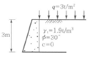
- Pa=2.85t/m, h=1.26m
- Pa=2.85t/m, h=1.38m
- Pa=5.85t/m, h=1.26m
- Pa=5.85t/m, h=1.38m
(정답률: 39%)
69. 어떤 흙 1,200g(함수비 20%)과 흙 2,600g(함수비 30%)을 섞으면 그 흙의 함수비는 약 얼마인가?
- 21.1%
- 25.0%
- 26.7%
- 29.5%
(정답률: 48%)
70. 동결된 지반이 해빙기에 융해되면서 얼음 렌즈가 녹은 물이 빨리 배수되지 않으면 흙의 함수비는 원래보다 훨씬 큰 값이 되어 지반의 강도가 감소하게 되는데 이러한 현상을 무엇이라 하는가?
- 동상현상
- 연화현상
- 분사현상
- 모세관현상
(정답률: 50%)
71. 그림과 같은 지반에 재하순간 수주(水柱)가 지표면으로부터 5m이었다. 20% 압밀이 일어난 후 지표면으로부터 수주의 높이는?
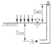
- 1m
- 2m
- 3m
- 4m
(정답률: 53%)
72. 사면안정계산에 있어서 Fellenius법과 간편 Bishop법의 비교 설명 중 틀린 것은?
- Fellenius법은 간편 Bishop법보다 계산은 복잡하지만 계산결과는 더 안전측이다.
- 간편 Bishop법은 절편의 양쪽에 작용하는 연직 방향의 합력은 0(zero)이라고 가정한다.
- Fellenius법은 절편의 양쪽에 작용하는 합력은 0(zero)이라고 가정한다.
- 간편 Bishop법은 안전율을 시행착오법 으로 구한다.
(정답률: 47%)
73. 폭 10cm, 두께 3mm인 Paper drain설계 시 Sand drain의 직경과 동등한 값(등치환산원의 지름)으로 볼 수 있는 것은?
- 2.5cm
- 5.0cm
- 7.5cm
- 10.0cm
(정답률: 40%)
74. 다음의 연약지반개량공법에서 일시적인 개량공법은?
- well point 공법
- 치환공법
- paper drain 공법
- sand compaction pile 공법
(정답률: 51%)
75. 다음 그림에서 지표면에서 깊이 6m에서의 연직응력(σv)과 수평응력(σh)의 크기를 구하면?(단, 토압계수는 0.6이다.)
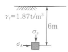
- σv=12.34t/m2, σh=7.4t/m2
- σv=8.73t/m2, σh=5.24t/m2
- σv=11.22t/m2, σh=6.73t/m2
- σv=9.52t/m2, σh=5.71t/m2
(정답률: 41%)
76. 100% 포화된 흐트러지지 않은 시료의 부피가 25cm3이고 무게는 40g이었다. 이 시료를 건조로에서 건조시킨 후의 무게가 24g일 때 간극비는 얼마인가?
- 1.36
- 1.80
- 1.62
- 1.70
(정답률: 21%)
77. 말뚝이 20개인 군항기초에 있어서 효율이 0.75이고 단항으로 계산된 말뚝 한 개의 허용 지지력이 15ton일 때 군항의 허용지지력은 얼마인가?
- 112.5ton
- 225ton
- 300ton
- 400ton
(정답률: 42%)
78. 평판재하실험 결과로부터 지반의 허용지지력 값은 어떻게 결정하는가?
- 항복강도의 1/2, 극한강도의 1/3 중 작은 값
- 항복강도의 1/2, 극한강도의 1/3 중 큰값
- 항복강도의 1/3, 극한강도의 1/2 중 작은 값
- 항복강도의 1/3, 극한강도의 1/2중 큰 값
(정답률: 44%)
79. 흙속에서의 물의 흐름에 대한 설명으로 틀린 것은?
- 흙의 간극은 서로 연결되어 있어 간극을 통해 물이 흐를 수 있다.
- 특히 사질토의 경우에는 실험실에서 현장 흙의 상태를 재현하기 곤란하기 때문에 현장에서 투수시험을 실시하여 투수계수를 결정하는 것이 좋다.
- 점토가 이산구조로 퇴적되었다면 면모구조인 경우보다 더 큰 투수계수를 갖는 것이 보통이다.
- 흙이 포화되지 않았다면 포화된 경우보다 투수계수는 낮게 측정된다.
(정답률: 45%)
80. 토질조사에 대한 설명 중 옳지 않은 것은?
- 사운딩(Sounding)이란 지중에 저항체를 삽입하여 토층의 성상을 파악하는 현장 시험이다.
- 불교란시료를 얻기 위해서 Foil Sampler, Thin wall tube samper등이 사용된다.
- 표준관입시험은 로드(Rod)의 길이가 길어질수록 N치가 작게 나온다.
- 베인 시험은 정적인 사운딩이다.
(정답률: 45%)
블리딩 시험은 콘크리트의 슬럼프 시험 후 일정 시간이 지난 후에 생기는 물의 분리 현상을 측정하는 시험 방법입니다. 이는 콘크리트의 물성과 혼합물의 비율 등을 파악하는 데에 사용됩니다.